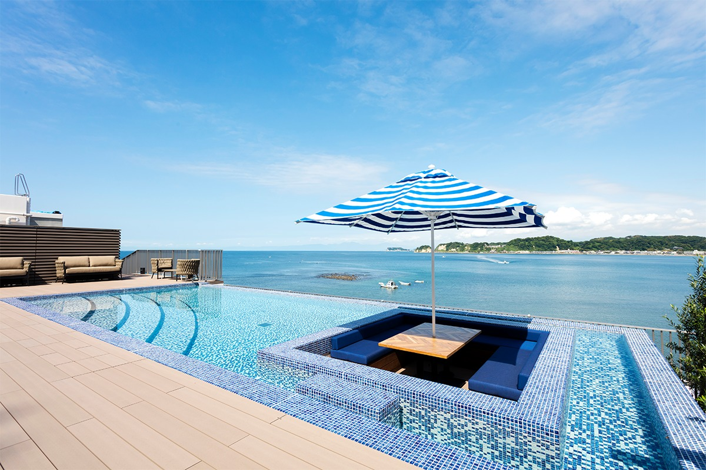
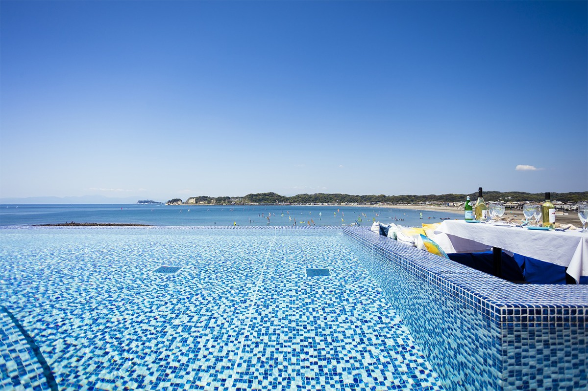
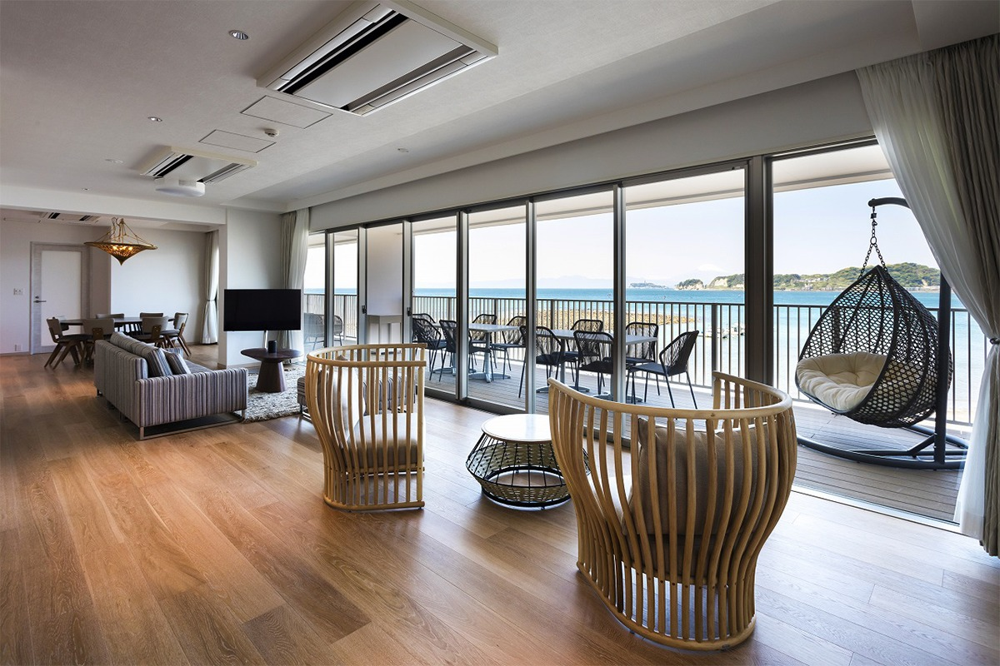
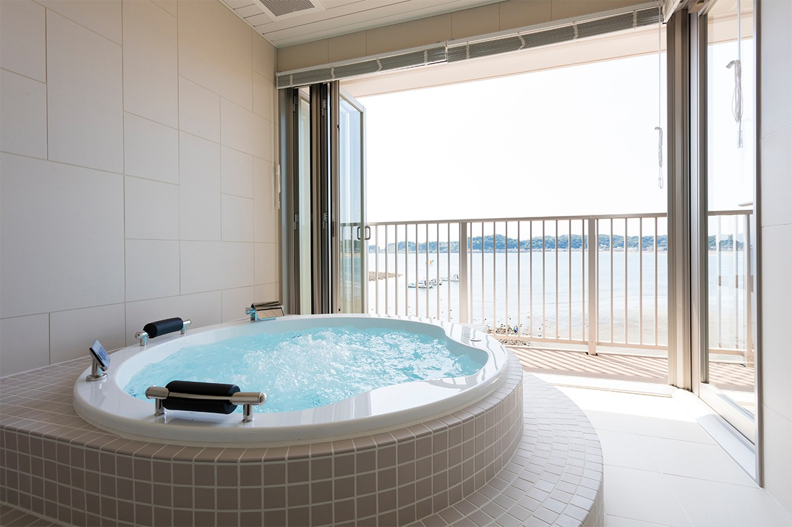
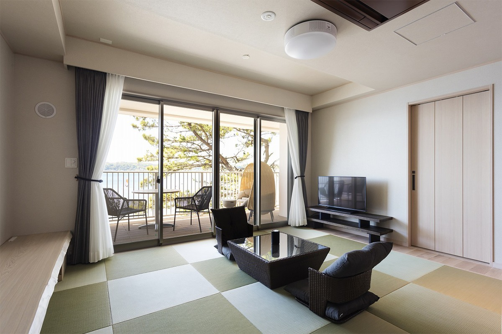
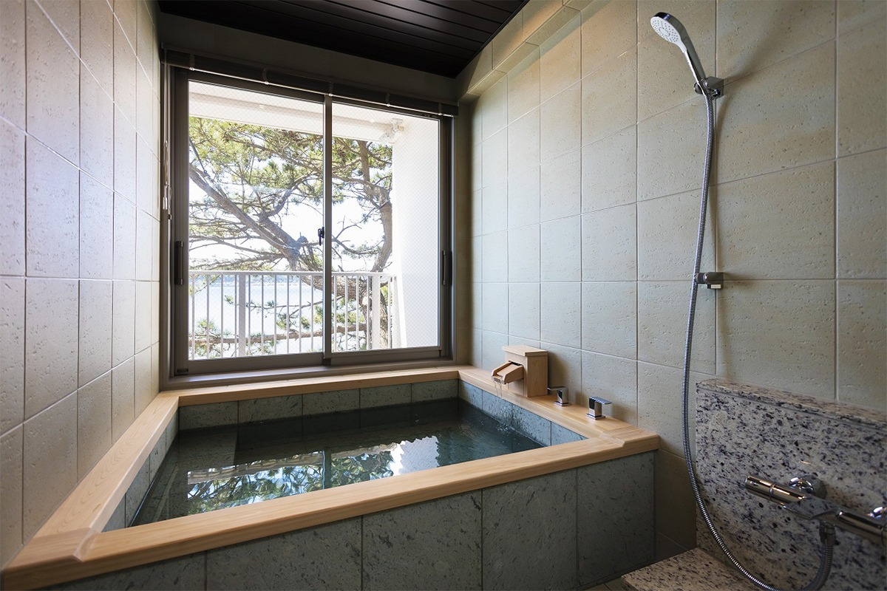
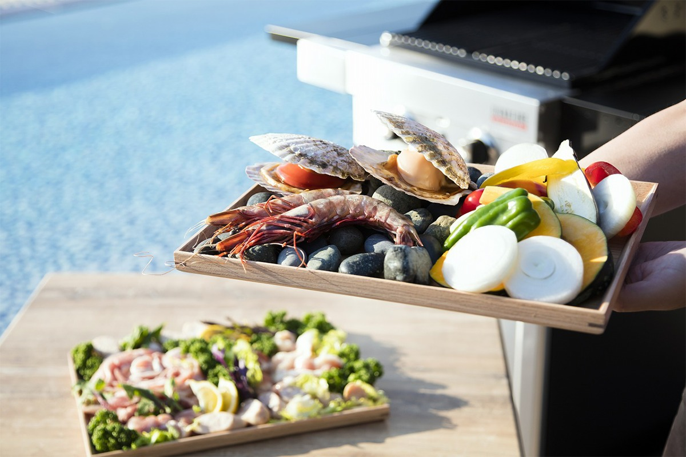
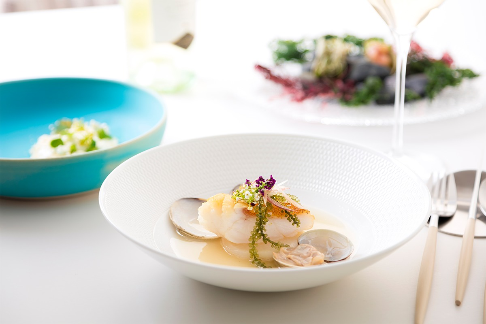
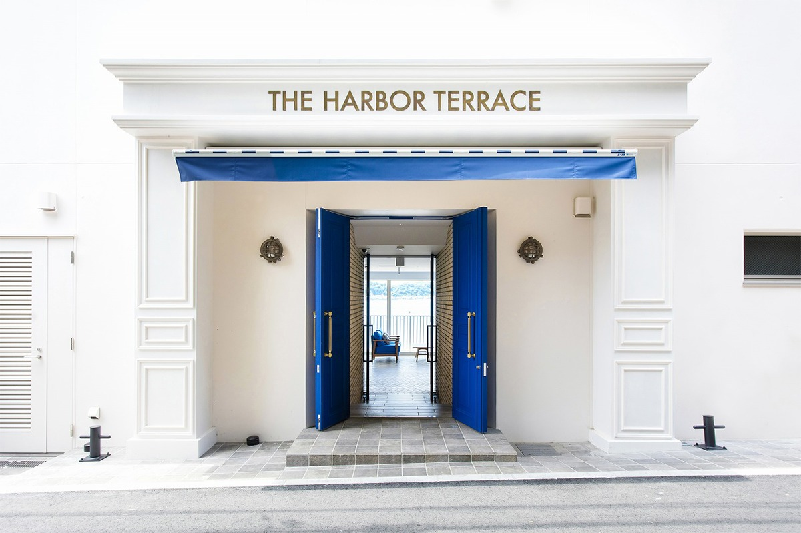

Префектура Канагава · Дзуси · где остановиться
THE HARBOR TERRACE: дом у моря в Дзуси с видом на Эносиму и Фудзи

На самом краю побережья Камакуры, напротив древней гавани Вакаэдзима, стоит дом, где каждый номер снимают как собственную дачу у моря. Отсюда видно остров Эносима, а в ясный день и Фудзи.
Место
Дача на побережье Сёнан
THE HARBOR TERRACE открылся 1 июля 2021 года. Это не обычный отель, а дом для отдыха, где номер снимают как квартиру у моря: с кухней, террасой и всем нужным для самостоятельной жизни. Прямо перед домом лежит Вакаэдзима, старейшие в Японии остатки рукотворной гавани. Дальше вдоль берега видны Эносима и, если повезёт с погодой, Фудзи.

Побережье Сёнан давно притягивает людей, которые ценят неторопливую жизнь у моря. Дзуси и соседняя Хаяма окружены красивыми пляжами и невысокими холмами. Здесь стоит летняя резиденция императорской семьи, а с эпохи Мэйдзи (1868–1912) на этом берегу строили санатории и дачи. Компания THE HARBOR TERRACE задумала дом как второй адрес для гостей: место, где можно легко примерить на себя здешний образ жизни.
Номера
Восемь комнат, все с видом на море
Номеров восемь, и каждый оформлен по-своему. Везде есть ванна с видом на море, терраса с обеденной зоной, где можно жарить барбекю, и кухня. Каждый номер выходит на береговую линию Камакуры, и из каждого виден закат. Номера названы в честь мест на побережье.


На нижнем этаже, ближе всего к воде, четыре номера. B01 Wakaejima угловой, в японском современном стиле, и через террасу в нём видны сосны. B02 Yuigahama оформлен в полоску, B03 Zaimokuza в светлых природных тонах и с элегантными деталями, а угловой B04 Inamuragasaki выдержан в синем. В трёх последних есть экран и проектор, а для третьего и четвёртого гостя ставят диван-кровать: в номере могут жить до четырёх человек.


На этаже с лобби расположены 101 Kamakura, угловая комната с татами и соснами за террасой, и 102 Zushi в светлых природных тонах, с экраном и проектором. Верхний этаж занимают два самых просторных номера. 201 Enoshima выдержан в коричневых тонах и в классическом духе, а в 202 Fujisan самая большая кухня в доме. В обоих есть экран и проектор, а с диванами-кроватями здесь могут жить до шести человек.
На крыше устроен бассейн-инфинити с лежаками, куда пускают только гостей дома. Отсюда видно, как вдоль берега тянется шоссе 134, и этот вид, море, дорога и холмы, для многих японцев и есть образ Сёнан.
Еда
Ресторан, барбекю или своя кухня
Как питаться, каждый решает сам. Можно купить местные продукты и готовить на кухне в номере, жарить барбекю на террасе или пойти в любимое кафе в Камакуре или Дзуси, как делают здешние жители. Гриль для барбекю есть в каждом номере, а продукты для него дом может подготовить сам: можно устроить барбекю только для своих и смотреть при этом на море.

В ресторане дома подают авторские блюда, в основе которых свежая рыба местного улова, приготовленная разными способами. Ужин только по предварительной записи. В 2021 году ужин в ресторане стоил 12 100 иен на человека, барбекю с продуктами от дома 7 260 иен на человека, а за гриль со своими продуктами брали 10 000 иен (всё с налогом и сервисным сбором).

Завтрак не приносят готовым: в номере оставляют свежие продукты, а утром гости сами готовят его на своей кухне и едят, глядя на море. В 2021 году такой завтрак стоил 3 025 иен на человека с налогом и сервисным сбором.

THE HARBOR TERRACE
- Адрес
- префектура Канагава, Дзуси, Коцубо, 5-14-7
- Телефон
- +81 467-39-5188
- Номера
- 8, все с видом на море
- Цены / Вход
- от 21 500 иен на человека без питания при размещении двоих в номере (с налогом и сервисным сбором, 2021)
- Как добраться
- от станции Камакура (JR) автобусом Keikyu № 40 или 41 до остановки «Комёдзи», затем 5 минут пешком. Парковка на 3 машины, только по предварительной брони.